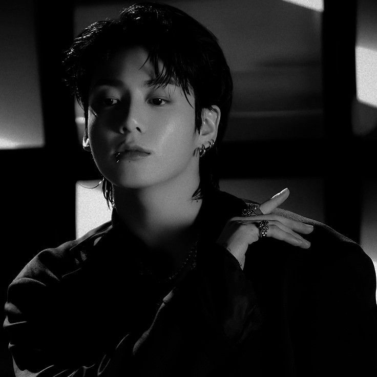
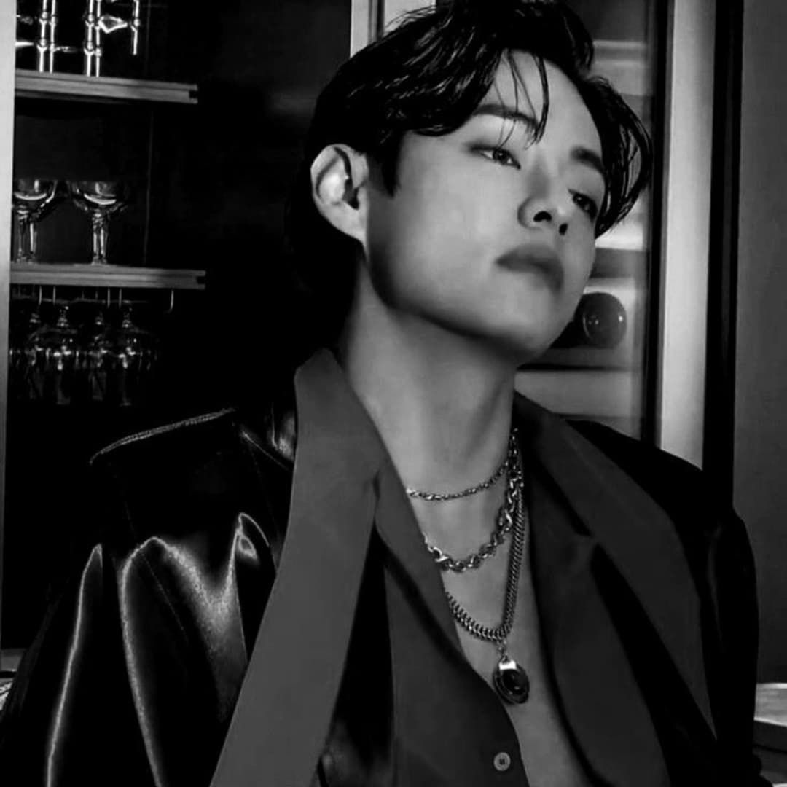
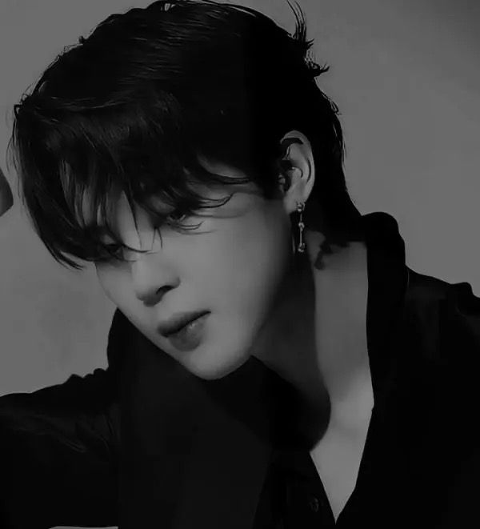
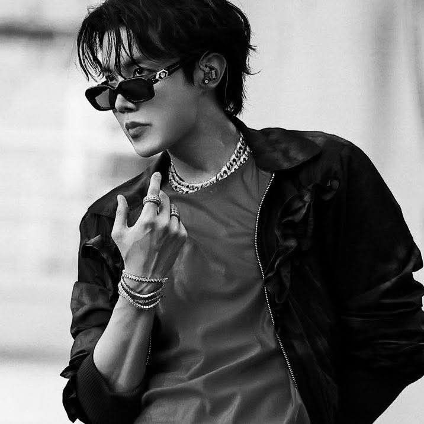
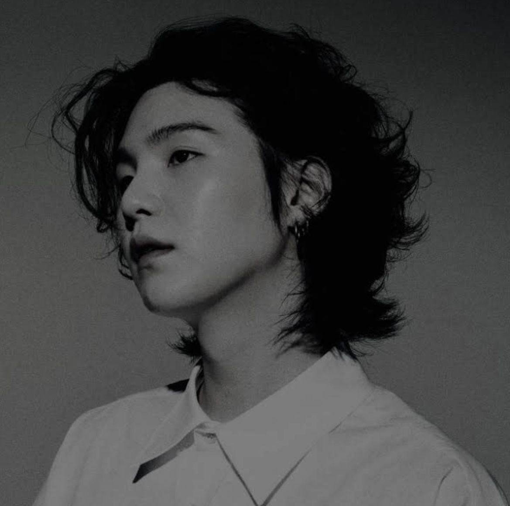
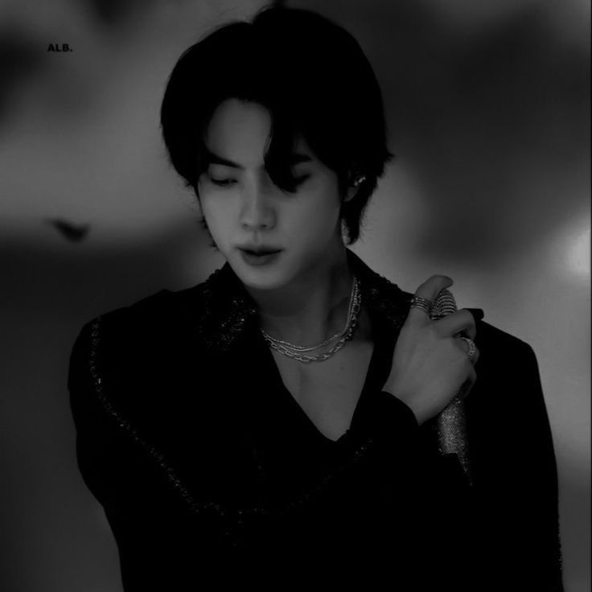
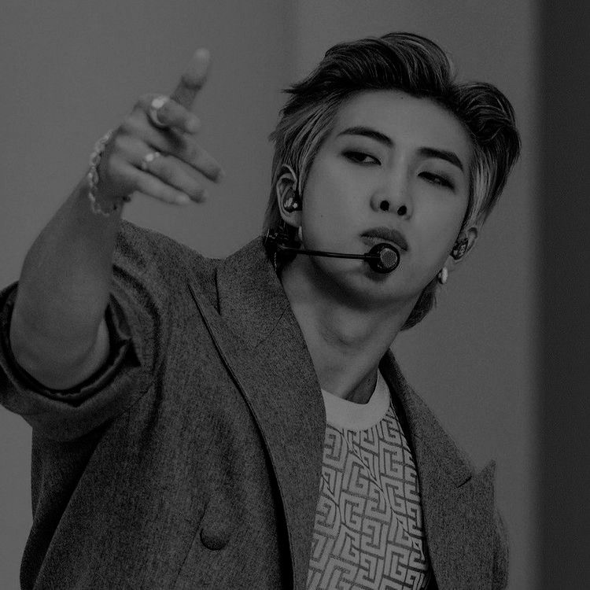

Jeon Jungkook didn’t exactly spawn as a global star, he was just a Busan kid who like singing and probably vibing in front of a mirror, then he auditioned for a show, didn’t even win (plot twist), but still got offers from companies, and somehow he choose BigHit after seeing RM and going “yeah this guy got main character energy, i’m staying.” He moved to Seoul, was shy, confused half the time, trained like crazy, messed up, improved, repeat again and again until boom he became Jungkook from BTS and now everyone is like wow talent, but honestly it was just him not giving up and surviving trainee life which is basically a boss level game lol.
Next →
Kim Taehyung didn’t even supposed to audition at first, he literally just went to support his friend and somehow ended up auditioning himself like okay?? and then boom he passed while his friend didn’t which is kinda awkward but also main character moment. He joined BigHit and kept kinda hidden at first, like fans didn’t even know he existed until debut which is just hella wild, imagine being a secret member he trained, did his thing, probably confused people with his random personality, and then suddenly he became V from BTS and now everyone is obsessed, but honestly it all started from him just tagging along that day which is crazy luck.
Next →
Park Jimin was not playing around at all, he was a dance student in Busan who was literally top of his class and everyone was like yeah he going somewhere, then his teacher told him to audition and he actually did and got in, which already sounds easy but it was not. He moved to Seoul and trained for a really short time compared to others, so he was stressed alot and kept thinking he might get cut any day, imagine that pressure fr. He practiced like crazy, probably didn’t even rest properly, just dance, sing, repeat until debut happened and boom he became Jimin from BTS and now people are like wow perfection, but back then he was just trying to survive trainee life and not get kicked out which is honestly scary . And now he is our whute swan!!
Next →
Jung Hoseok was already known for dance before anything, like street dance, competitions, winning stuff, he was not new to it at all. He first auditioned just for dancing and got in, but then plot twist he had to learn singing and rapping too which was not easy for him, so he trained like crazy and sometimes even doubted himself alot. There was even a time he almost left, which is kinda shocking now because imagine BTS without him, no way, but he ended up staying because the members really wanted him to stay, jk cried and hugged him so that he does not leaveand he also didn’t want to give up on everything he already worked for. He stayed, worked harder, became the sunshine energy of the group, and then boom J-Hope happened and now everyone is like he was born for stage, but really he just kept pushing even when things wasn’t easy
Next →
Min Yoongi, or Suga, is like the sleepy genius of BTS who somehow raps fire even when he looks like he just rolled out of bed. Before he joined Big Hit, he was grinding in the underground, broke but still making beats and probably napping in between. He stayed not just for the fame but because music was basically his only real friend and also he secretly liked bossing the members around. Yoongi’s kinda quiet but also savage sometimes and lowkey the one who makes BTS sound like magic even if he pretends to hate everything. Honestly, he probbably drinks like three cups of coffee just to function but still manages to drop lyrics that hit you right in the soul. You can never tell if he id being serious or joking but somehow it works perfectly and everyone loves himm
Next →
Our World Wide Handsome, Kim Seokjin, is the big goofy guy of BTS who somehow makes eating ramen look like a fancy art performance. He joined Big Hit dreaming of singing and showing off his visuals a little, and stayed because he loves making people laugh and being the “mom” of the group. Jin is always cracking cheesy jokes, doing random dramatic poses, and somehow still hitting those high notes like it’s nothing. Even when the members are total chaos, he’s usually the calm (or extra extra dramatic) presence making sure everyone eats, sleeps, and doesn’t explode. Basically, he’s loud, hilarious, and ridiculously handsome all at once, and somehow the perfect mix that keeps BTS fun and alive.
Next →
Kim Namjoon, or RM, is the leader of BTS, the father of the group, and famously known as the god of destroyer, mostly because his legendary clumsiness somehow wrecks everything around him in the funniest way. He joined Big Hit and instantly became raaaappppp Monsterrrrr, staying because he wanted to turn his wild thoughts into music with people he actually trusted. RM’s always thinking ten steps ahead, quoting random philosophers, dropping wisdom in the middle of chaos, and somehow intimidating everyone one minute while running around in his underwear the next (don’t ask). He’s kinda serious but secretly hilarious, and the perfect mix of brain, chaos, clumsiness, and soft heart is exactly why BTS wouldn’t be BTS without him. Our pookie God of Desroyer.
Gallery →